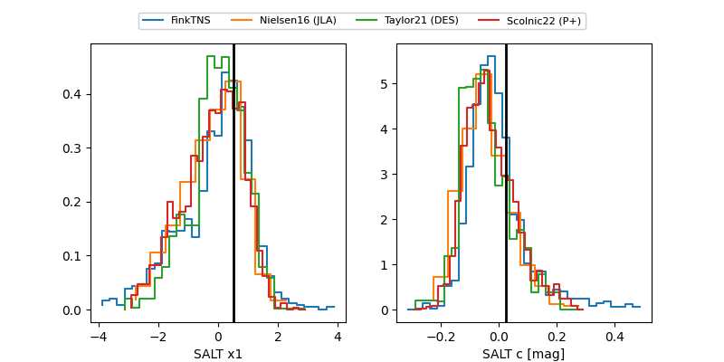

FINK: ZTF25ablgyjm
Lasair: ZTF25ablgyjm
ALeRCE: ZTF25ablgyjm
TNS: 2025wqe
YSE: 2025wqe
ZTF25ablgyjm (ztf,fink)
2025wqe (tns,yse)
ATLAS25kwt (atlas)
equatorial (ra, dec) = (102.8841,+69.69488)
galactic (l, b) = (145.5087,+25.32681)

last ztfg=19.53, ztfr=19.91
4 ztfg, 6 ztfr detections